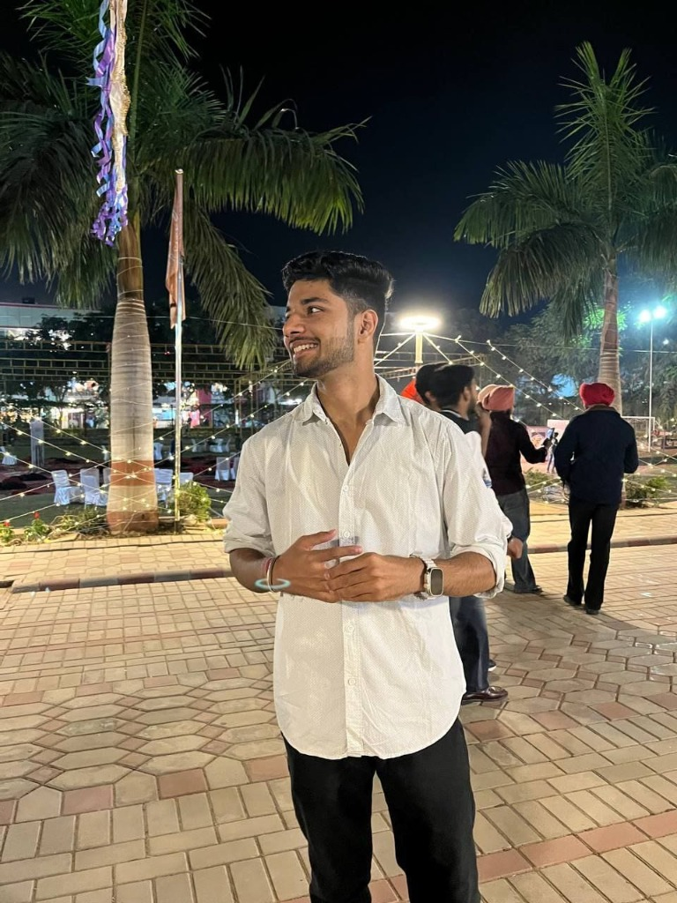

Backend & Microservices
Java (8+), Spring Boot, Concurrency, RESTful APIs, Distributed Systems
- Java 21 / 8+
- Spring Boot 3
- Distributed Systems
- RESTful API Design
- Multithreading & Concurrency
- Node.js
- Express.js
- Building Microservices
AI Native Intern @ EPAM Systems Systems & Software Engineer.
EPAM Systems · AI Native Intern
Chitkara University · B.E. CSE (2023–2027)
CGPA: 8.89/10 · Ex-Technical Head, Bits & Bytes

I architect and build high-concurrency task orchestrators, distributed caching runtimes, and AI-native systems with end-to-end ownership from design to production.
Validated across production,
distributed systems & research.
Java (8+), Spring Boot, Concurrency, RESTful APIs, Distributed Systems
Modern full-stack, real-time WebSockets, interactive state DAGs
Durable storage, CI/CD pipelines, containerization & 1000+ DSA
Production-grade systems and simulations from my resume. Open any folder to examine its live architecture and API orchestration.
Direct contracts or secure orders through Fiverr. High standards, deterministic delivery.
Architect resilient backend microservices with Java 21, Spring Boot 3, concurrency thread pools, priority scheduling, and fault-tolerant retry policies with zero data loss.
End-to-end full-stack development using Next.js, React, Node.js, WebSockets, and Server-Sent Events (SSE) with clean RBAC authentication and responsive UI/UX.
Diagnose latency bottlenecks, design O(1) in-memory LRU caches, optimize database queries across MySQL & MongoDB, and integrate complex third-party RESTful APIs.
Current role & track record.
Engineered for scale.
Whether it's a distributed systems opportunity, freelance microservice contract on Fiverr, or research collaboration — my inbox is open.